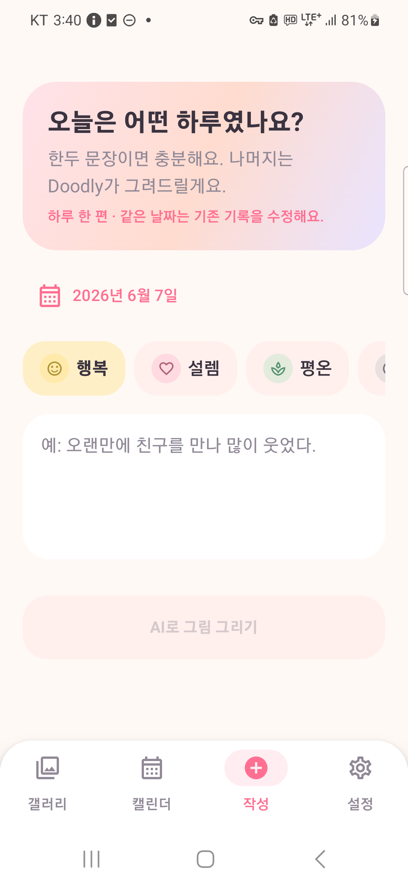
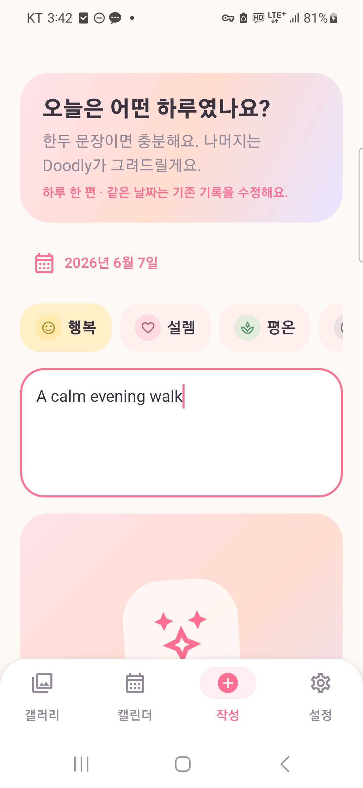
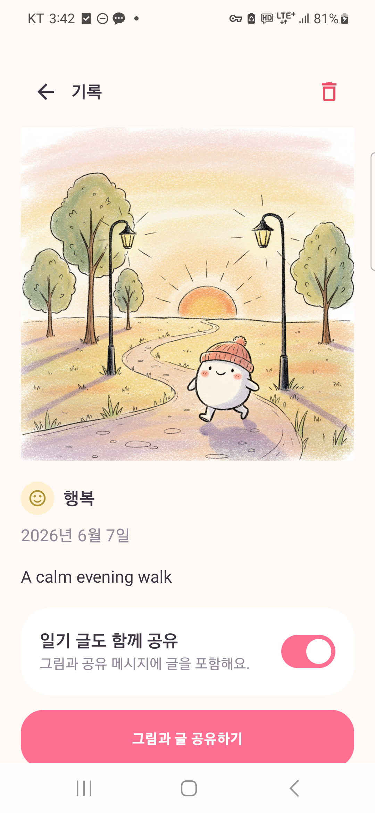
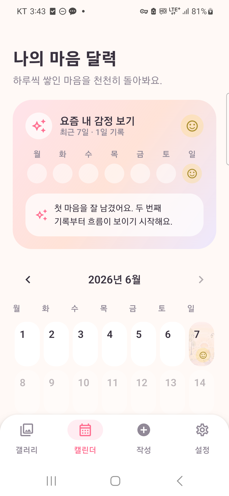
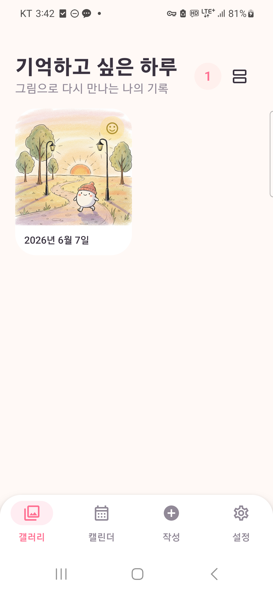
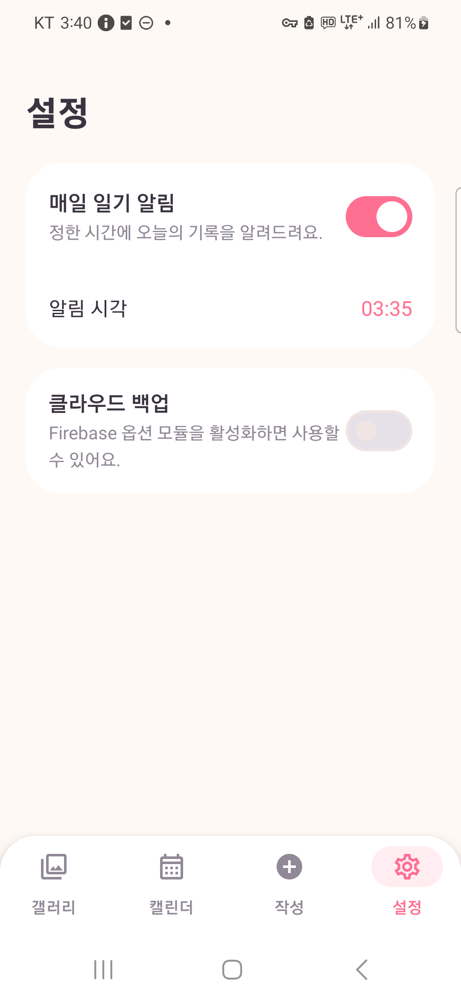

짧은 일기와 감정을 AI 손그림으로 남기는 비주얼 다이어리
| 작성자 | 권태훈 |
|---|---|
| 학번 | 202111394 |
| 과목/분반 | 모바일 프로그래밍/3193 |
| 문서 상태 | 최종 제출본 |
| 제출일 | 2026-06-07 |
| GitHub | https://github.com/Quaxlyuri/doodly |
일기는 하루를 돌아보고 감정을 정리하는 좋은 도구지만, 매일 긴 글을 써야 한다는 부담 때문에 습관으로 만들기 어렵다. 또한 텍스트만 쌓이는 기존 일기 앱은 사용자가 과거 기록을 다시 열어볼 동기를 충분히 제공하지 못한다.
Doodly는 사용자가 한두 문장의 짧은 기록과 감정만 선택하면 AI가 그날의 분위기를 손그림 이미지로 표현하도록 기획했다. 적은 입력으로 하루를 남기고, 갤러리와 감정 캘린더에서 시각적으로 기억을 돌아보는 경험이 핵심이다.
Compose UI는 사용자 입력을 ViewModel에 전달하고 Flow를 collectAsState()로 관찰한다. ViewModel은 화면 상태와 비동기 작업을 관리하며, Repository는 Room과 네트워크 구현을 추상화한다. Hilt 대신 AppContainer와 ViewModelProvider.Factory를 사용해 의존성을 수동 주입했다.
프롬프트 생성과 이미지 생성을 분리했으며, 키 누락·네트워크 오류·응답 오류 시 감정 색상의 로컬 폴백 이미지를 생성해 작성 흐름을 유지한다.
| 구분 | 기술 | 선정 이유 |
|---|---|---|
| Language | Kotlin, Java 17 | 코루틴과 Flow를 활용한 Android 개발 |
| UI | Jetpack Compose, Material 3 | 상태 기반 UI와 애니메이션 |
| Database | Room 2.8.4, KSP | 타입 안전한 SQLite와 Flow 지원 |
| AI | Gemini SDK, Gemini 이미지 API | 프롬프트 구조화와 이미지 생성 |
| Network | Retrofit, OkHttp, Gson | 명시적인 REST 요청과 DTO 관리 |
| Image | Coil Compose | 내부 파일 이미지 비동기 표시 |
| Navigation | Navigation Compose | 하단 탭, 상세, 딥링크 통합 |
| Android | AlarmManager, FileProvider | 정시 알림과 안전한 파일 공유 |
날짜별 한 편만 저장하기 위해 Room Entity의 date 열에 unique index를 설정했다. 날짜를 선택하면 기존 기록을 먼저 조회하고, 존재하면 입력값을 복원해 수정 모드로 전환한다.
@Entity(
tableName = "diary",
indices = [Index(value = ["date"], unique = true)]
)
private fun safeDate(value: Long): Long =
normalizeDate(value).coerceAtMost(todayMillis())
val id = if (state.editingId != null) {
diaryRepository.update(entry)
state.editingId
} else {
diaryRepository.insert(entry)
}이 방식은 같은 날짜의 중복 데이터가 캘린더 셀에서 충돌하는 문제를 방지한다. DatePicker, 캘린더 셀, ViewModel에서 미래 날짜를 단계별로 차단한다.

AiRepository가 키 확인, 프롬프트 생성, 이미지 API 호출, Base64 디코딩, 파일 저장과 실패 폴백을 담당한다.
return runCatching {
val prompt = GeminiTextService(key)
.createImagePrompt(content, mood.label)
.imagePrompt
val response = imageService.generateImage(
apiKey = key,
request = GeminiImageRequest(/* prompt */)
)
val encoded = requireNotNull(response.firstBase64())
saveBytes(Base64.decode(encoded, Base64.DEFAULT))
}.getOrElse {
createFallbackImage(mood)
}생성 중에는 회전과 크기 변화가 있는 애니메이션을 표시하고, 결과는 fade와 scale 효과로 등장한다. API 키는 소스에 하드코딩하지 않고 Secrets Gradle Plugin과 BuildConfig.AI_KEY로 접근한다.


선택 월을 StateFlow로 관리하고 flatMapLatest로 Room 월별 쿼리를 구독한다. 커스텀 7열 Layout은 기록 날짜에 이미지 썸네일과 감정 아이콘을 표시하며, 미래 날짜와 미래 달을 비활성화한다.
val entries: Flow<List<DiaryEntry>> = _month.flatMapLatest {
val range = monthRange(it)
repository.getMonth(range.first, range.last)
}
DayCell(
entry = entriesByDay[day],
enabled = date <= LocalDate.now()
)최근 7일 기록은 날짜별로 집계하고, 두 건 이상이면 Gemini가 짧은 감정 메시지를 생성한다. 데이터가 부족하거나 API가 실패하면 규칙 기반 로컬 메시지를 표시한다.

갤러리는 Room Flow를 관찰해 그리드와 리스트를 자동 갱신한다. 상세 화면에서는 일기 글 포함 여부를 선택하고 FileProvider URI를 ACTION_SEND Intent에 전달한다. 설정 화면에서는 TimePicker로 알림 시각을 지정하며, Receiver가 알림 후 다음 날 예약을 다시 생성한다.
val shareIntent = Intent(Intent.ACTION_SEND).apply {
type = "image/*"
putExtra(Intent.EXTRA_STREAM, uri)
if (includeDiaryText) putExtra(Intent.EXTRA_TEXT, entry.content)
addFlags(Intent.FLAG_GRANT_READ_URI_PERMISSION)
}

토스식 정보 구조를 기반으로 파스텔 색상, 큰 둥근 모서리, 부드러운 여백을 강화했다. 스플래시 이후 핵심 행동인 작성 화면으로 바로 이동하며, 이모지 문자가 아닌 일관된 벡터 감정 아이콘을 사용한다.
문제: 초기 엔드포인트와 DTO가 실제 이미지 모델 응답과 맞지 않아 AI 이미지 대신 폴백만 표시됐다.
해결: gemini-2.5-flash-image:generateContent 엔드포인트, TEXT/IMAGE 응답 모달리티, inlineData.data Base64 파싱을 적용했다.
결과: 실기기에서 실제 손그림 생성과 내부 PNG 저장을 확인했다.
원인: 하단 탭의 백스택과 날짜 인자 작성 화면의 진입 경로가 일관되게 관리되지 않았다.
해결: 날짜 인자가 있는 작성 화면에 BackHandler를 등록하고, 캘린더 pop을 우선 시도한 뒤 없으면 현재 작성 화면을 제거하며 캘린더로 이동했다.
해결: date unique index, findByDate, 기존 ID update 정책을 결합해 날짜당 하나의 감정과 이미지만 유지했다.
해결: DatePicker maxDate, 캘린더 셀 비활성화, 미래 달 이동 제한, ViewModel 날짜 보정의 네 단계로 차단했다.
해결: secrets.properties를 Git에서 제외하고 BuildConfig로만 접근한다. 공개 저장소에 노출된 키는 즉시 폐기하고 새 키를 발급해야 한다.
| 요구사항 | 상태 | 내용 |
|---|---|---|
| Compose + Material 3 | 완료 | 전체 UI Compose 구현 |
| MVVM + Repository + Room | 완료 | Flow, suspend, Factory 수동 주입 |
| 일기 작성과 날짜별 수정 | 완료 | 날짜당 한 편, 미래 날짜 차단 |
| AI 이미지 생성 | 완료 | Gemini, Base64 저장, 실패 폴백 |
| 갤러리/상세/공유 | 완료 | Coil, FileProvider, 글 포함 선택 |
| 감정 캘린더와 AI 한마디 | 완료 | 월별 Flow, 최근 7일 분석 |
| 알림과 딥링크 | 완료 | AlarmManager, write/diary URI |
| API 키 분리 | 완료 | Secrets Gradle Plugin |
| Firebase 선택 백업 모듈 | 완료 | Repository 추상화와 선택 구현 분리 |
| 실행 화면 캡처 | 완료 | docs/screenshots 수록 |
| APK 제공 | 완료 | releases 폴더 수록 |
| 2분 요약 영상 제출 항목 | 완료 | README 자료 영역과 영상 구성안 작성 |
| 10분 발표 영상 제출 항목 | 완료 | README 자료 영역과 상세 발표 대본 작성 |